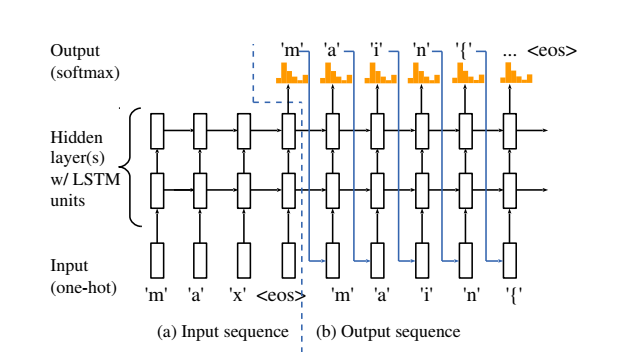

Experience in Peking UniversityI used to participate into the undergradute research in Software Engineering Institute, Peking University. Below is my undergraduate research project.. Programming Model Learning Based On Neural Network With Variable State TableDeveloped a Recurrent Neutral Network with a variable status table to automatically generate code fragments or complete programs that meet the needs of developers. The variable status table can eliminating the influence of self-defined variables to the code generation process.  |